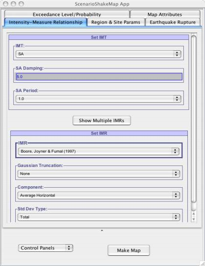
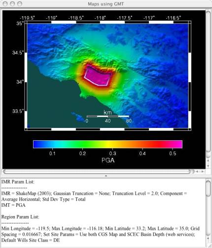

ScenarioShakeMap application can be downloaded from Applications link on http://www.OpenSHA.org. User can download the application and run on his own system without a web-browser (standalone application).
This application provides user with capability of plotting Scenario-Shake-Map for a given potential earthquake rupture in selected region. This rupture gets inputted inside the selected attenuation relationship(s). Plotting of map is done using GMT. More to be added, may be Ned can do that ????.
May provide references to these Attenuation Relationships (?????)
User has option of either selecting the single attenuation a time or selecting multiple attenuations at any given time (refer section ????).
It provides user with elaborative and friendly messages if parameter settings goes outside the scope of the model. This application tries to provide user with as many adjustable parameters that allows comparing the varied results based on different parameters.
This application allows user to plot linear and log map by adjusting the parameters for Map attributes, which is basically the data that is sent to the GMT.
In Fig -1, Scenario-ShakeMap application when it launched. This application allows user to adjust the following:
1) Intensity Measure Relationship parameters: Allowing the user to select multiple attenuation relationships or single attenuation and some of their adjustable parameters.
2) Region and Site Parameters: Allowing user to set Region lats and lons (in degree). Also allowing to set the site parameters for this region. User has choice of either applying same site effects to all sites or setting the site effects using the Wills Site Class and Basin Depth.
3) Earthquake Rupture Parameters: Allowing user to define his/her own rupture or select one from already existing Earthquake Rupture Forecast models like Step ERF, USGS-2002 ERF model, etc.
4) Exceedance Level/Probablity: Setting up what to create the map for?
(i) Prob@IML : Finds what is the probability of exceeding the given intensity measure level for each site in the region.
(ii) IML@Prob : Finds what is the intensity measure level that will be exceeding the given probability for each site in the region.
IML : Intensity Measure Level
Prob : Probability
5) Map attributes Parameters: Setting up the parameters for map attributes that allows user to vary GMT plotting parameters.
Similarly values listed for supported attenuations relationships are dependent on the chosen Intensity Measure Type. Following are the Intensity Measure Type enabled in our application:
1) SA
2) PGA
3) PGV
4) MMI
Based on what user has selected as IMT, only those Attenuations Relationships that support the chosen IMT are provided as choices to for user to select from.
User can view parameters info by hovering the mouse cursor over the parameter name.
This is a very lightweight application that has no dependency on the users machine. This application just assumes that user must be having internet access when running this application, otherwise shows user with the message that there are problems connecting with the server. Otherwise this application does not hog the client machine for performing the computation. User has choice of either performing the computation on his own machine or on the server (By default calculation are performed on the server). Once user has adjusted all the parameters for which map has to be computed, he/she can click on the Make Map button that will create map using the GMT on the server.
|  |
| Fig -1: ScenarioShakeMap application when it is launched |
|  |
|
Fig - 2: Shows Scenario ShakeMap for Puente Hills Region.Map generated using the GMT. User can produce the same by selecting Set Params for Puente Hills Scenario from Control Panel list and then hitting the Map Map button. |
This application provides very user-friendly error messages so user understands what went wrong in the application. Even after user has provided some incorrect inputs in the application, he/she will be prompted with error message, describing the nature of the error. Once user is notified with the error, he/she can correct the input and redo the calculations. Once an error message is thrown by the application, it will remain in the same state until user fixes the error. But if application does crash due to some reason, a window (Bug Report window) will launched that will allow user to send email to the OpenSHA group describing the problem and what was user trying to do when the exception occurred.
There are different types of adjustable parameters in the application.
1) Where user can enter numeric value, most of these parameters have defined min and max values constraints on them. Constraints for these parameters are visible by hovering the mouse over them.
2) User can make selection from a list of choices provided to him. These type of parameters don't allow user to enter any value, choice has to be made from list of choices provided to him.
Once user set the parameter in the GUI, parameter value automatically gets set.
Constraints on the parameters can be 2 types:
1) Absolute constraints: If user goes outside this range, exception message will be shown to the user and value of the parameter will be reverted back to the old value. For example see Fig ???.
2) Recommended constraints: If user goes outside this range, window is popped-up asking user if he/she really wants to go with entered value, even though it is not recommended for the model. For example see Fig ???.